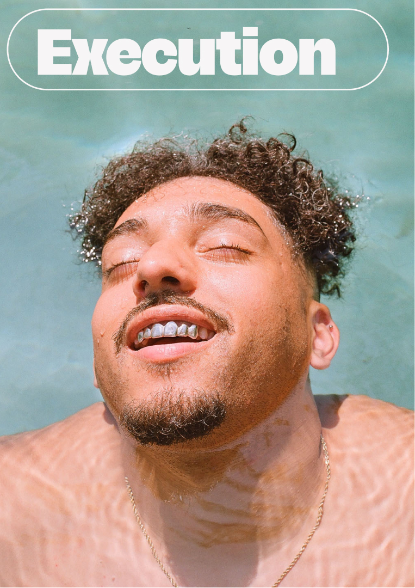
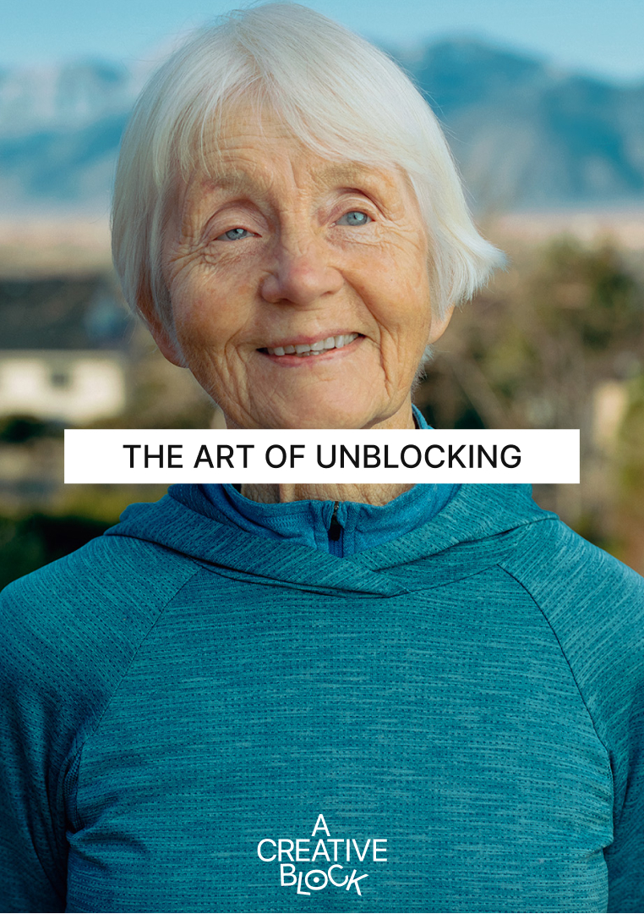

Focused
Project Session
€150
One 90-minute session to clarify the obstruction, work directly on the project and define the next move.
EnquireYou don't need to arrive with the answer. Being unsure is often the most creative place to start.
You are not lazy. Avoidance is doing a job.
Getting stuck is a signal, not a discipline problem. We work out what it's protecting you from, then make the work possible again.




What is actually blocking progress—named, not guessed at.

Concrete next moves you can test in real work, not vague advice.

A workable route you can keep walking once the sessions end.
One 90-minute session to clarify the obstruction, work directly on the project and define the next move.
EnquireThree 60-minute sessions: understand the block, test an intervention in real work and adjust from what happens.
EnquireSix sessions combining coaching, project clarification, experiments and review. €600 / €800 / €1,200 on our sliding scale.
Enquire